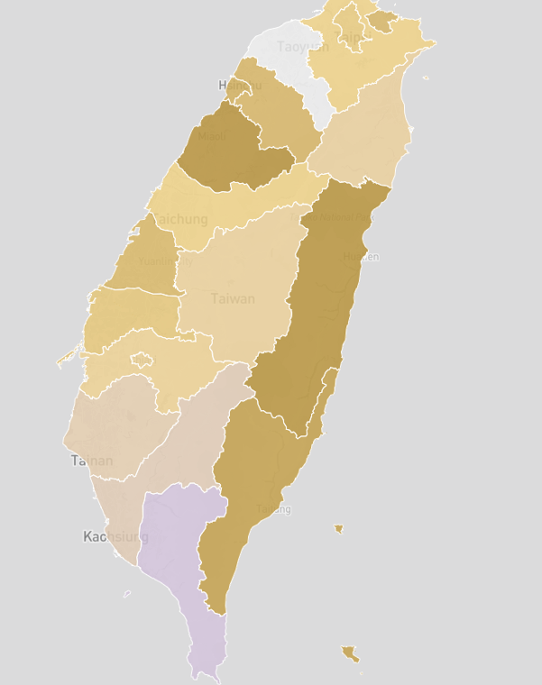

Data journalist · Visual storyteller · Based in Taipei
Stories that make
Asia's data
visible.
讓亞洲的數據，
被看見。
I work at the intersection of investigative journalism, geospatial analysis, and interactive design — building data stories about elections, and environmental politics across Taiwan and Asia.
我是鍾依靜，駐台北的資料記者。
擅長用數據說故事，說關於亞洲政治、科技與環境、性別的那些故事。

On 23 August 2025, Taiwan held its third nuclear referendum — asking whether the Maanshan plant, which formally shut down in May, should be allowed to restart once safety regulators give the green light.
Two interactive maps. The first animates yes-vote share across all 22 counties, tracing the geography of public opinion. The second is a risk map: the hidden cost most voters never factored in — how many villages and residents fall inside the 8km emergency evacuation zone if something goes wrong at Maanshan?
2025年8月23日，台灣舉行第三次核能公投，主題是已在5月停機的核三廠——該不該在主管機關確認沒有安全疑慮後，重新運轉。
我做了兩張互動地圖。一張用動畫帶出22縣市的同意票比例，看見民意的地理樣貌；另一張風險地圖，畫出多數人投票時沒算進去的隱形成本——萬一核三廠出事，8公里疏散範圍內有多少村落、約幾萬人會受影響？

The Big [Censored] Theory is a data journalism piece by The Pudding. Its author, Mandy, first watched The Big Bang Theory in 2011 — and when she returned to it eleven years later on Chinese streaming platform Youku, she kept noticing strange, jarring pauses.
She compared all 100 episodes of the original against the Youku cuts, using charts to quantify exactly what Chinese regulators had excised.
《The Big [Censored] Theory》是 The Pudding 推出的資料專題。作者 Mandy 在2011年第一次看美劇《生活大爆炸》，11年後重看，卻發現中國串流平台優酷上的版本常出現不連貫的停頓。
她把100集原版和優酷剪輯版逐集比對，分析原始影音資料庫（集數、秒數、審查理由），同時利用互動式幻燈片和顏色編碼分類，讓讀者理解中國如何監管文化影視作品。
This investigative report analyzes the evolving landscape of women’s political participation in Taiwan. Since 2022, a record-breaking 24 female candidates ran for local government heads across 22 counties and cities—a 30-year high that marked a new chapter in Taiwan’s "Women Power."
A key data chart from the "Ten Keywords for Taiwan's 2024 Election" series, focusing on the rise of women's political representation.
從2022年開始，全台灣22個縣市長選舉中，共有24位女性候選人，創下女性參政人數30年來的新高，開啟台灣「女力」的政治新篇章。
台灣2024大選「十個關鍵字」系列中，聚焦女力崛起的一張關鍵數據圖表。
Investigative reporting on the human rights and environmental impact of Taiwanese companies operating in Indonesia.
I used Google My Maps and QGIS to build a supply chain map — plotting the locations of affected communities across garment manufacturing, circuit board assembly, and nickel mining sites, and turning abstract cross-border harm into coordinates you can see.
一篇關於台灣企業在印尼造成人權與環境衝擊的調查報導。我利用 Google My Maps 和 QGIS 建了一張供應鏈地圖，把成衣製造、電路板組裝、鎳礦開採的受害地點一一標出來，讓抽象的跨國侵害成為看得見的座標。
Fluent in Chinese, English, and French, with years covering Taiwan's elections and environmental politics — previously at The Initium (端傳媒) and the Environmental Information Center (環境資訊中心).
Currently deepening creative coding and scrollytelling, and drawn to roles that pair rigorous data work with human-centred narrative — especially where climate, governance, and social justice intersect across Asia.
中英法文流利，曾任職於《端傳媒》與《環境資訊中心》，長期跑選舉與環境線。
目前持續深化Creative Coding，熱衷於地圖製作🗺️